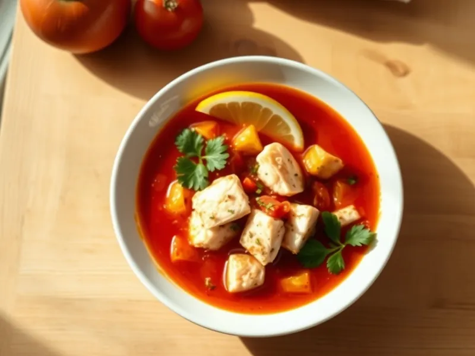

Рыбный суп с томатами по-средиземноморски
Быстрый суп из филе трески с томатами, перцем, чесноком и петрушкой
30 мин4 порц.205 ккал на порциюБ 24 · Ж 7 · У 10Средиземноморская кухня
Открыть в приложении: порции, таймеры, список покупок
Продукты на 4 порц.
- Треска500 г
- Томаты в собственном соку1 шт
- Лук репчатый1 шт
- Перец болгарский1 шт
- Чеснок2 зуб.
- Оливковое масло2 ст. л.
- Вода800 мл
- Паприка1 ч. л.
- Петрушка0,5 пучка
- Лимон0,5 шт
- Соль1 ч. л.
Как готовить
- Нарежьте лук и перец мелкими кубиками, чеснок пластинками, треску кусками 3 см.
- Обжарьте лук и перец в оливковом масле на среднем огне 5 минут, добавьте чеснок и паприку, жарьте 1 минуту.
- Добавьте томаты с соком, воду и соль, доведите до кипения и варите 8 минут на слабом огне.
- Опустите рыбу и варите 5-6 минут без бурного кипения, пока кусочки не станут белыми и не начнут расслаиваться.
- Снимите с огня, посыпьте петрушкой и подавайте с долькой лимона.
Совет. Рыбу кладите в самом конце и не мешайте сильно, тогда куски останутся целыми. Вместо трески подойдут минтай или хек.